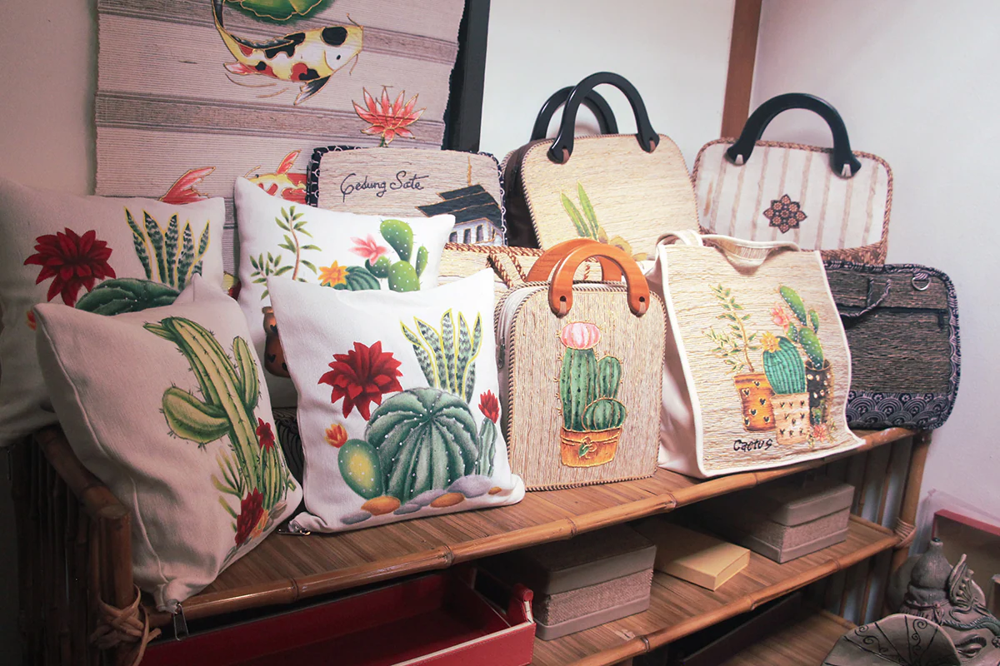

Inkubator Bisnis

Inkubator Bisnis Universitas Islam Majapahit didirikan pada tahun 2015 oleh Bapak Rektor Universitas Islam Majapahit. Layanan utama kami yang pertama yaitu Layanan Pembiayaan & Akses Pembiayaan
bertujuan untuk Memfasilitasi kebutuhan pendanaan dengan lembaga keuangan, perbankan, venture capital serta pmerintah. Layanan lainnya yaitu Layanan Pendampingan Operasi/Produksi, Pemasaran,
Teknologi, Keuangan, SDM bertujuan untuk Memfasilitasi kebutuhan pendanaan dengan lembaga keuangan, perbankan, venture capital serta pemerintah.
Pusat Studi
Pusat Studi di Universitas Islam Majapahit merupakan kelompok keilmuan dengan kepakaran di bidang tertentu yang mempunyai minat terhadap kajian ilmu dan melaksanakan kegiatan perencanaan, pelaksanaan, pengendalian mutu kegiatan serta kerjasama bidang penelitian dan pengabdian kepada masyarakat dalam rangka pengembangan keilmuan yang bersifat multidisiplin.
Kawasan Sains Teknologi
lembaga yang mendukung inovasi dan komersialisasi teknologi, pengembangan kreasi usaha dan lapangan kerja dan pengembangan ekonomi dari hasil hilirisasi riset oleh dosen dan mahasiswa.
Pusat Otomotif
Keahlian dalam penelitian dan inovasi yang kami miliki dalam bidang otomotif diantaranya:
Melakukan proses reprove engineering untuk pengembangan komponen otomotif agar dapat diproduksi lokal
Mengembangkan model dan prototipe komponen otomotif yang efisien, efektif dan siap untuk diuji dan diproduksi massal
Memproduksi model dan prototipe komponen otomotif dari hasil inovasi, reprove engineering, dan pengembangan produk
Mengembangkan peralatan bantu proses produksi untuk dapat meningkatkan kualitas dan kuantitas produk dari industri lokal komponen otomotif
Mengusulkan HAKI dari karya-karya inovatif yang di hasilkan dari kegiatan kreatif dan inovatif, serta mempromosikannya kepada industri untuk dapat diproduksi massal.
Pusat Kreatif

Ada banyak produk unik dan kreatif dari UNIM. Produk-produk ini menggunakan bahan ramah lingkungan dengan nilai ekonomi tinggi. Beberapa produk menggabungkan nilai estetika dan teknologi. Produk-produk tersebut dibuat melalui beberapa langkah seperti perancangan produk, prototyping, proses pengadaan, perakitan, finishing, branding, dan pengemasan. Produk-produk ini telah menarik investor nasional dan internasional dan siap untuk produksi besar-besaran.